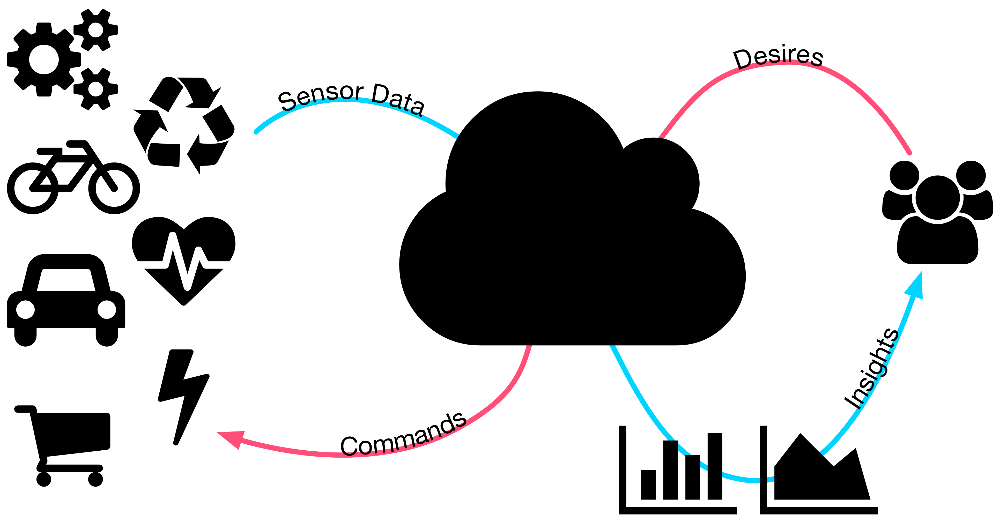
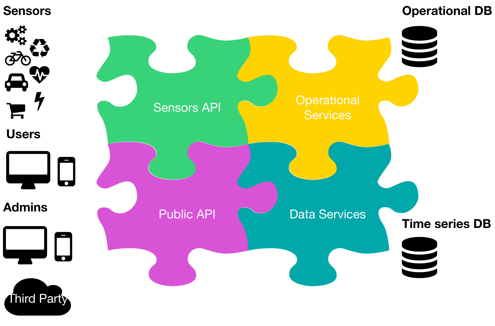
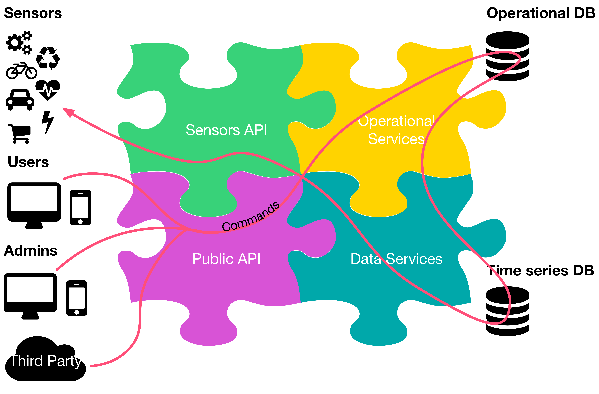
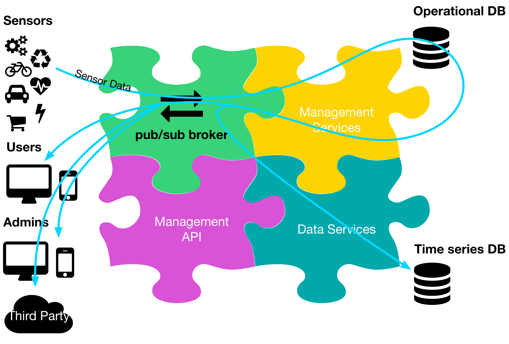
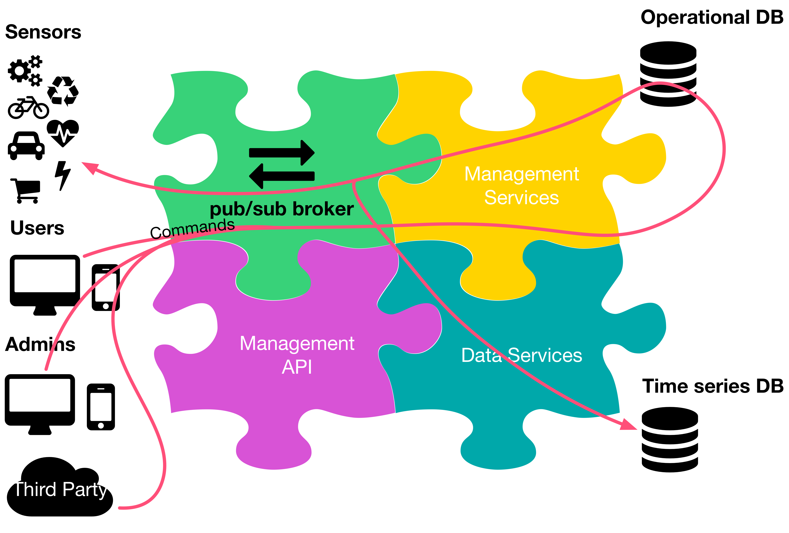
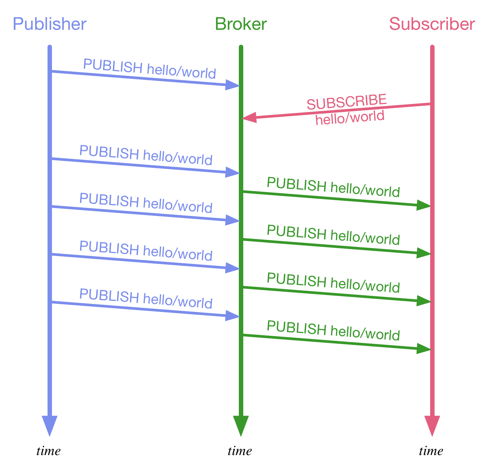

JS Everywhere
by Matteo Collina
This blink like it's 1998
what js is good for
if (el.style.visibility === 'hidden') {
el.style.visibility = 'visible'
} else {
el.style.visibility = 'hidden'
}

Flow control is built-in
If applications sends too much data, we can slow them down with backpressure!
function process(data, cb) {
/* oh yeah, we are processing one
thing at a time
or we can do batches! */
setTimeout(cb, 500)
}
Node.js has streams too!
source.pipe(dest).pipe(source)
Microservices
- AWS Lambda
- Netflix
- Uber
- ... and many others!

The best community ever
we love you too, npm


var HelloMessage = React.createClass({
render: function() {
return Hello {this.props.name};
}
});
ReactDOM.render(<HelloMessage name="John" />, mountNode);
NodeBots
Credits http://github.com/nodebots

Credits http://github.com/nodebots

Johnny Five
var five = require("johnny-five")
var board = new five.Board()
board.on('ready', function () {
/* Create an Led on pin 13 */
var led = new five.Led(13)
/* Blink every half second */
led.blink(500)
})
You should not see this!
Universal JS

- use the same libraries in browsers, servers, and devices
- simple architecture, fewer components
- can we use all of this to build an IoT system?
An IoT system
Another IoT system
One more IoT system
The world is our playground..
..for now :)
What is an IoT system?

Architecture
Sensor Data Flow

Commands Flow

Problems
- Latency
- no reuse
- complex
- lots of moving parts
Using a pub/sub broker
Sensor Data Flow
Commands Flow


MQTT.js works on
- browsers
- servers
- devices
MQTT
- publish/subscribe protocol
- multiple quality of service level..
- ..with at-least-once and exactly-once semantics
- low overhead (2 bytes at minimum)
- offline messaging
- retained messages, like a key/value store
- can run over WebSocket
Publish-Subscribe
MQTT broker in Node.js
Mosca
- http://npm.im/mosca
- Standalone usage, through `$ mosca`
- Embeddable in your app, so you can do X for every message
- Authentication APIs
- Supports Mongo, Redis, AMQP, and MQTT as pub/sub backends
- Needs a DB, such as LevelDB, Mongo, or Redis
- Support websockets
- Test instance available at test.mosca.io
- New version coming with 10x throughput improvement
Authentication in Mosca
var server = new mosca.Server(settings);
/* Accepts the connection if the username
and password are valid */
function authClient(client, user, pass, cb) {
var authorized = (
user=== 'alice' &&
pass.toString() == 'secret' );
if (authorized) client.user = user;
callback(null, authorized);
}
server.authenticate = authClient;
Publish Authorization in Mosca
var server = new mosca.Server(settings);
function authPub(client, topic, payload, cb) {
var ok = client.user == topic.split('/')[1];
/* we can alter the message here */
if (ok) callback(null, payload);
else callback(null, false);
}
server.authorizePublish = authPub;
Subscribe Authorization in Mosca
var server = new mosca.Server(settings);
function authSub(client, topic, cb) {
var ok = client.user === topic.split('/')[1];
cb(null, ok);
}
server.authorizeSubscribe = authSub;
Storing data in a timeseries
var server = new mosca.Server(settings);
function published(packet, client, callback) {
timeseries.store(packet, callback);
}
server.published = published;
http://senecajs.org
var seneca = require('seneca')()
seneca.add({
role:'user',
cmd:'login'
}, function (args, callback) {
var loggedIn = args.username === 'matteo' &&
args.password === 'collina'
callback(null, { loggedIn:loggedIn })
})
seneca.listen()
var seneca = require('seneca')()
var client = seneca.client()
client.act({
role:'user',
cmd:'login',
username: 'matteo',
password: 'collina'
}, function (err, result) {
console.log(result.loggedIn)
})
Features
- multiple transports, from bare TCP to busses
- build a monolith, and then split it away
- deep inspection & debugging tools
- authentication/user managament system
- control panel
- integration with HAPI
- gossip-based service discovery
Demo: an IoT system
- microservice based
- on top of MQTT
- service discovery based on gossip
Demo!
Links
- MQTT.js: http://npm.im/mqtt
- Mosca: http://mosca.io
- Seneca: http://senecajs.org/
- Fuge: http://fuge.io
- Vidi: https://github.com/vidi-insights/vidi-dashboard
- seneca-mesh: http://npm.im/seneca-mesh
- toolbag: http://npm.im/toolbag
- swim-js: http://npm.im/swim-js
- baseswim: http://npm.im/baseswim
This presentation

Thanks!
If you need help with Node
or the Internet of Things